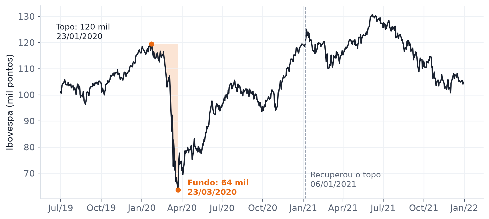
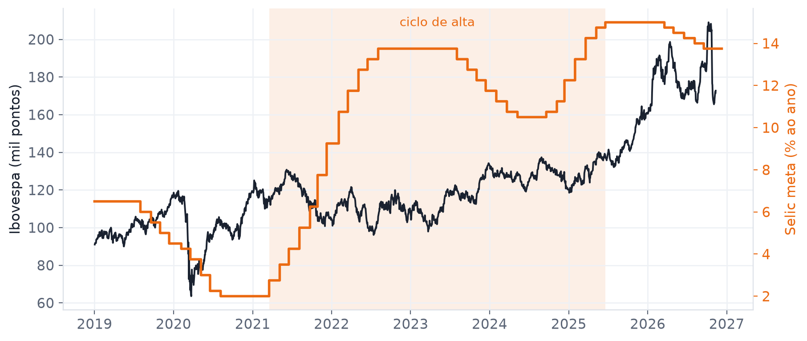
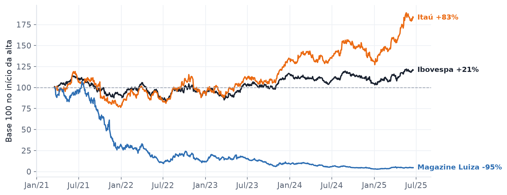
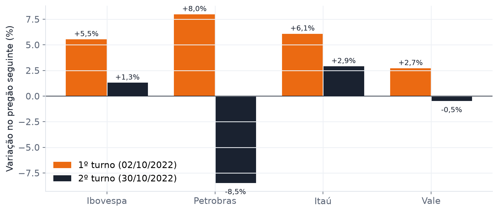
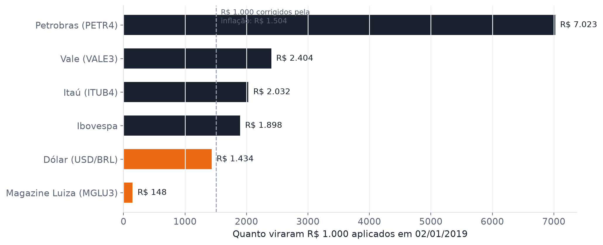

O Mercado Não Mente
Quis ver nos números como a bolsa brasileira reagiu a alguns momentos que todo mundo lembra. Peguei os preços de 02/01/2019 a 11/11/2026 e fui atrás de quatro perguntas.
1. A pandemia tirou 47% do Ibovespa em 40 pregões
Em 23/01/2020 o Ibovespa fechou em 120 mil pontos. Com a covid chegando ao Brasil, o índice caiu até 64 mil em 23/03/2020. Foram -46,8% em 60 dias.
A volta demorou bem mais. O índice só fechou acima do topo anterior em 06/01/2021, uns 9 meses depois do fundo.

2. O que aconteceu com a bolsa quando os juros subiram
Na pandemia o Banco Central baixou a Selic até 2,00% ao ano, o menor nível desde que a taxa existe. Em 18/03/2021 ele começou a subir de novo e só parou em 15,00%, em 19/06/2025.

Minha hipótese era simples. Com juro alto, comprar a prazo fica caro, então o varejo deveria sofrer, e banco tende a lucrar mais com crédito. Comparei o Ibovespa com o Itaú e a Magazine Luiza durante a alta: o índice terminou em +20,8%, o Itaú em +83,2% e a Magazine Luiza em -95,4%.

Dessa vez a hipótese bateu. A distância entre os dois foi de 179 pontos percentuais no mesmo intervalo, com a mesma taxa de juros valendo para os dois.
3. O dia seguinte ao primeiro turno de 2022
No pregão depois do primeiro turno, Petrobras andou +8,0%. Num dia comum daquele ano, a oscilação típica era de 2,3%, então o movimento foi umas 3 vezes maior que o normal.
| Ativo | 1º turno (02/10/2022) | 2º turno (30/10/2022) | Dia típico em 2022 |
|---|---|---|---|
| Ibovespa | +5,5% | +1,3% | 1,2% |
| Petrobras | +8,0% | -8,5% | 2,3% |
| Itaú | +6,1% | +2,9% | 1,5% |
| Vale | +2,7% | -0,5% | 2,4% |

4. Quem ganhou da inflação desde 2019
No período, o IPCA acumulou +50,4%. Então não basta o ativo subir, ele precisa subir mais que isso para o dinheiro valer mais do que no começo. Magazine Luiza e Dólar não conseguiram.

De onde vêm os números
Os preços vêm do Yahoo Finance pela biblioteca yfinance, e a Selic e o IPCA vêm da API do Banco Central. Tratei tudo em Python com pandas e fiz os gráficos com matplotlib. Os números do texto são calculados pelo próprio código, que roda de novo toda sexta pelo GitHub Actions, então esta página se atualiza sozinha.
Uma ressalva importante: olhar o preço em volta de um fato não prova que o fato causou o movimento, porque muita coisa acontece ao mesmo tempo. E nada aqui é recomendação de investimento.